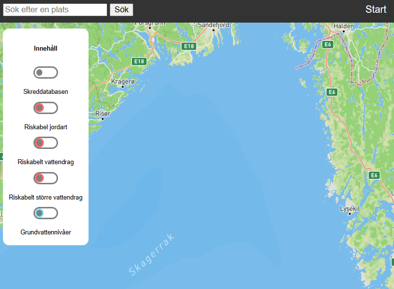

Karttjänsten RAS
Nedan följer en beskrivning av tjänsten RAS. Detta är en tjänst som använder öppna data för att öka förståelsen och medvetandeheten omkring jordskred. Tjänsten riktar sig främst mot privatpersoner som kan ges en generell bild av vart viss risk förekommer och där man då kan gå vidare med nogrannare undersökningar vid behov. Karttjänsten kan inte användas för att peka ut ett specifikt lokalt riskområde då det krävs geologiska undersökningar för att fastställa jordens egenskaper.Ett område med jordarten lera skulle kunna vara mycket säkert, men generellt är detta en riskfaktor.
Karttjänsten innehåller lager för inträffade skred, generella platser med jordarter som lera och sant, i tjänsten kallat riskabla jordarter. Den innehåller även vattendrag inom riskabla jordarter för att kunna ge en bild av potentiellt skredkänsliga områden. Tjänsten har även ett lager för grundvattennivåer då dessa har betydelse för ett inträffande av skred.